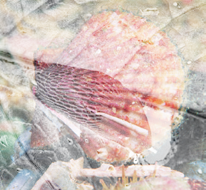
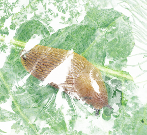
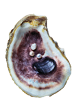
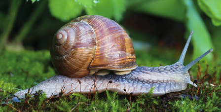

Animales tan familiares para nosotros como el caracol, la almeja y el calamar son moluscos. Algunos son terrestres, si bien la mayoría son acuáticos, tanto marinos como de agua dulce.
El cuerpo de los moluscos
Los moluscos presentan simetría bilateral. Su cuerpo blando está cubierto por una fina piel denominada manto, que segrega una concha. En su cuerpo se diferencian tres partes: cabeza, masa visceral y pie.

Vieira

Slug sobre una hoja
Las funciones vitales de los moluscos
Los moluscos acuáticos respiran por branquias y los terrestres, mediante pulmones. Las formas de alimentación son variadas.
La reproducción es siempre sexual. Muchos tienen sexos separados, es decir, hay individuos hembras e individuos machos. No obstante, algunas especies son hermafroditas, como el caracol de huerta; en este caso, cada individuo presenta testículos y ovarios de forma simultánea. Todos son ovíparos.
Presentan órganos sensoriales relacionados con el olfato, el tacto y el gusto. Algunos tienen unos ojos muy desarrollados.

Corte transversal de una concha

Caracol sobre musgoForma geométrica simple